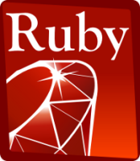
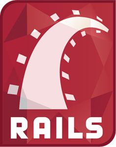
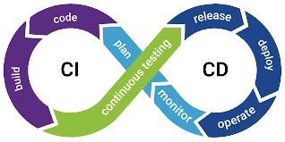
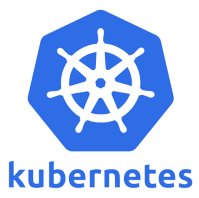
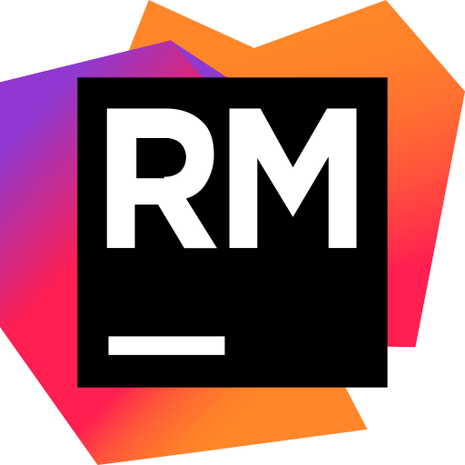
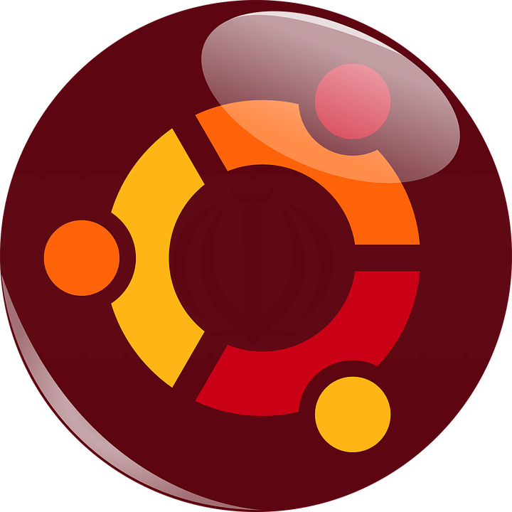
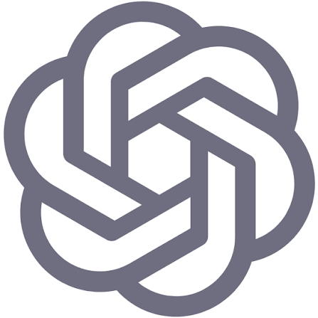
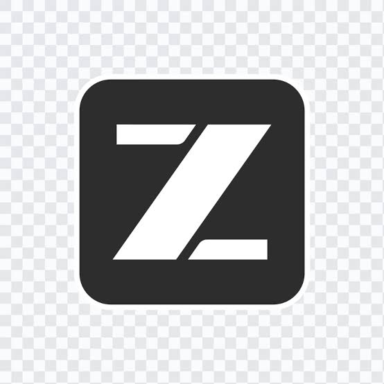

Languages & frameworks
- Ruby 2.x / 3.x · Rails 3.x–7.x
- JavaScript · HTML5 · CSS3 / SCSS
- Bootstrap 3 / 4 / 5 · jQuery · Slim
- React.js · Next.js
- Web crawlers and scrapers
- Linux / shell scripting
- Full-stack web architecture

Ruby
Rails
CI/CD Docker
Docker
K8s
RubyMine
Ubuntu
ChatGPTHi, I'm
Technical Project Manager
& Lead Software Engineer
8+ years building full-stack Ruby on Rails applications, leading engineering teams, and delivering scalable fintech and e-commerce platforms.
Ruby on Rails · AWS & DevOps · AI-assisted engineering
Kuala Lumpur, Malaysia
I’m Touqeer Ahmad, a Technical Project Manager and Lead Software Engineer based in Kuala Lumpur, Malaysia.
I bring 8+ years of experience in Ruby on Rails, full-stack web architecture, and cloud DevOps. I lead engineering teams and take products from requirements and system design through development, deployment, and production support, with experience across fintech and e-commerce.

GLM: development and optimizationLead Software Engineer & Technical Project Manager
Selangor, Malaysia · Oct 2024 – Present
Connected roadside assistance, on-demand battery replacement, breakdown support, and a digital marketplace.
Projects: Admin, branch/staff and rider CRM with role-based permissions; Brace retail orders; bateriku.com; customer, rider, and partner APIs
Integrations: WhatsApp (Meta Graph API), Billplz, Razorpay Curlec, Touch ’n Go, Boost, Google Maps, LHDN APIs, Firebase
Stack: Ruby on Rails, JavaScript, AWS, GCP, Docker, GitHub Actions, Kamal
Lead Software Engineer
Kuala Lumpur, Malaysia · Jul 2019 – Oct 2024
Fintech platforms that make financial products more accessible and seamless.
Projects: Loanplus, Loanstreet, eKYC / IC Verification, GBSN-i2u (FWD), AEON-PF
Ruby gems: sms_notifier (GoSMS / Macrokiosk), credit_service (CTOS / Experian), slide_selector
Stack: Ruby on Rails, Python, JavaScript, WebSockets, Docker, Drone CI, AWS, GCP, Linode
Senior Software Engineer
Lahore, Pakistan · May 2018 – Jun 2019
Projects: Zen Arbitrage (zenarbitrage.co / fba.zenarbitrage.com), High School Zoom
Stack: Ruby on Rails, JavaScript, WOWZA, AWS, Heroku
Software Engineer
Lahore, Pakistan · Jan 2017 – Dec 2018
Projects: ANA, Souq of Qatar
Stack: Ruby on Rails, JavaScript, AWS, Heroku
Sep 2012 – Jul 2016
BSCS (Hons) - Bachelor of Science in Computer Science
Completed projects in Windows Phone SDK 8.0, compiler construction, OpenCV image recognition, Arduino Uno, and STM32F102RB.
Game in C++: Developed Tetris Game in C++
Windows Mobile App: Developed Reversi game in Windows Mobile App using C#
Final Year Project: Autonomous Paintball Bot using OpenCV, Arduino, and real-time image processing for object tracking.
Oct 2010 – Aug 2012
ICS - Intermediate Computer Science
A collective study of computer and science to provide a general education in information technology and software development.
Let’s discuss Rails platforms, cloud delivery, and technical leadership.
Location: Kuala Lumpur, Malaysia